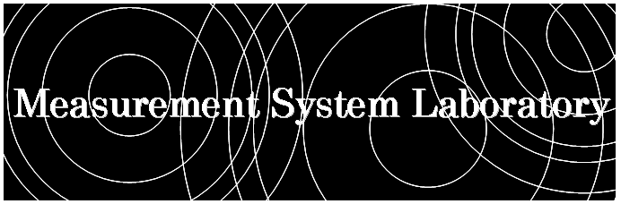

トップページ
研究テーマ
研究報告
研究スタッフ
研究設備
研究室の所在地
教育・研究理念
産学連携のご案内
学生の募集
講義に関する情報
研究関連リンク
用語解説
Mesurement
System
Laboratory
京都工芸繊維大学
計測システム工学研究室
私たちは，
光・流体・音響計測手法の開発・応用
を研究しています．
japanese/
english
News
合格者発表 (R03.09.01)
講習会：機械学習のすすめ (R03.08.28)
混相流の研究：「Macroscopic and microscopic hydrodynamic mixing of stratified suspensions」がPHYSICAL REVIEW Eに掲載されました (R03.08.27)
日本実験力学会 2021年度年次講演会@オンライン（弘前大学主催） (R03.08.25-27)
混相流シンポジウム2021＠オンライン（関西大学主催） (R03.08.22-24)
大学院入試 (R03.08.19)
プラグ (R03.08.11)
回流水槽清掃 (R03.08.05)
3Dプリンタ (R03.07.30)
大学院模試2021 (R03.07.28)
501A,B,Cの引っ越し (R03.07.14)
前日移動 (R03.07.13)
梱包 (2021.07.12)
M4 (R03.07.10)
梱包 (2021.07.09)
キムワイプの箱 (R03.04.28)
ベーコン (R03.04.08)
入学宣誓式 (R03.04.05)
防水処理 (R03.04.01)
過去のトピックス